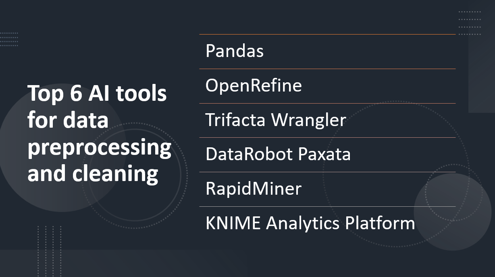

Introduction
Data preprocessing and cleaning are essential steps in preparing data for analysis and machine learning tasks. They involve handling missing values, removing outliers, standardizing data formats, and more. Artificial Intelligence (AI) tools have emerged as powerful solutions to automate and streamline the data preprocessing and cleaning process.
In this blog post, we will explore the top six AI tools for data preprocessing and cleaning, highlighting their capabilities, ease of use, and impact on data quality.
Learn Python using our Interactive Editor
- AI tools automate data preprocessing and cleaning tasks, saving time and effort.
- They ensure high accuracy in handling complex data transformations and cleaning operations.
- AI tools can scale up to process large volumes of data and handle different data types.
- They enforce data standardization for consistency and usability.
- AI tools handle missing data by imputing values using various techniques.
- They detect and handle outliers to improve data quality.
- AI tools perform feature engineering to generate new features or derive insights from existing ones.
- They seamlessly integrate with machine learning models, optimizing performance and accuracy.
Here Are Our Top 6 AI tools for data preprocessing and cleaning:
1: Pandas
Overview and Importance
Pandas is a powerful AI tool for data preprocessing and cleaning that is widely used in the data science community. It provides high-performance, easy-to-use data structures and data analysis tools, making it an essential tool for working with structured data.
Learn more about Pandas
Key Features and Capabilities
Data Manipulation
- Flexible data structures (DataFrame and Series) for easy indexing, slicing, and reshaping of data.
- Functionality for handling missing values, data filtering, sorting, and merging datasets.
- Enables extraction of relevant information from complex datasets.
Data Cleaning
- Tools for removing duplicate values, transforming data types, and handling outliers.
- Allows for custom data transformations.
- Simplifies data preparation with methods for data normalization, imputation, and validation.
2: OpenRefine
Overview and Importance
OpenRefine, formerly known as Google Refine, is an open-source AI tool for data cleaning and transformation. It is designed to help users explore, clean, and preprocess messy data, making it a valuable tool in the data wrangling process.
Learn more about OpenRefine
Key Features and Capabilities
Data Exploration
- User-friendly interface for interactive data exploration.
- Data visualization options and statistical summaries for better understanding of data structure and quality.
- Powerful tools for removing duplicates, correcting errors, standardizing values, and splitting/merging cells.
- Support for advanced operations like regular expression matching and extraction for complex data cleaning tasks.
Data Reconciliation
- Built-in functionality for reconciling data with external sources.
- Match and link data records to known entities, enhancing accuracy and consistency of the data.
3: Trifacta Wrangler
Overview and Importance
Trifacta Wrangler is an AI tool for data preparation and cleaning that focuses on simplifying and automating the data wrangling process. It allows users to transform raw and messy data into clean and structured formats suitable for analysis and modeling. Trifacta Wrangler is widely used in data-driven organizations to streamline data preparation tasks and improve the efficiency of data analysis workflows.
Learn more about Trifacta Wrangler
Key Features and Capabilities
Data Profiling
- Comprehensive data profiling to understand data structure, quality, and distribution.
- Automatic identification of data types, anomaly detection, and summary statistics generation.
- Various operations for data transformation, including type conversion, column splitting/merging/renaming.
- Support for advanced transformations like parsing complex data formats and extracting information using regular expressions.
Data Quality Assessment
- Features to identify and address data quality issues.
Ability to define data quality rules and perform checks for missing values, outliers, and inconsistencies.
- Visualize and filter data based on quality criteria for accurate and reliable cleaned data.
- AI-powered suggestions for data transformations.
- Automatic pattern detection, recognition of repetitive tasks, and intelligent transformation proposals.
- Reduces manual effort in data cleaning and preparation.
4: DataRobot Paxata
Overview and Importance
DataRobot Paxata is an AI-powered data preparation and cleaning tool that aims to streamline and automate the process of preparing data for analysis. It allows users to explore, clean, and transform raw data into a structured and analysis-ready format. DataRobot Paxata is widely used in organizations that deal with large and complex datasets, helping them accelerate the data preparation process and improve the quality of their data.
Learn more about DataRobot Paxata
Key Features and Capabilities
Data Profiling
- Automatic data profiling to detect data types, missing values, and calculate summary statistics for data insights.
- Wide range of transformation operations such as type conversions, filtering, merging, and splitting.
- Advanced transformations like data imputation, outlier detection, and standardization.
Data Quality Assessment
- Define and apply data quality rules to address issues like duplicates, inconsistent values, and invalid entries.
- Visualize and track data quality metrics for accurate and reliable data.
Collaboration and Governance
- Shared workspaces and collaborative features for multiple users to work simultaneously.
- Access controls, data lineage tracking, and auditing capabilities for governance.
Automation and Machine Learning Integration
- Automatic suggestion of data transformations based on patterns and user behavior.
- Integration with machine learning platforms for building predictive models directly from cleaned and transformed data.
5: RapidMiner
Overview and Importance
RapidMiner is a popular AI tool that provides a comprehensive environment for data preparation, machine learning, and predictive analytics. It enables users to efficiently process and transform raw data into actionable insights. RapidMiner is widely used in various industries for tasks such as data preprocessing, feature engineering, and model building, playing a crucial role in the data analysis pipeline.
Learn more about RapidMiner
Key Features and Capabilities
Data Integration
- Easily import data from various sources, including databases, spreadsheets, and text files.
Data Wrangling
- Perform data cleaning and transformation tasks, such as missing value imputation, outlier detection, and feature selection.
Automated Data Preparation
- Utilize automated workflows for efficient data cleaning, normalization, and standardization.
Visual Data Exploration
- Explore data visually through interactive visualizations, charts, summary statistics, and data profiling capabilities.
Collaboration and Sharing
- Collaborate with team members by sharing workflows, transformations, and models in a shared repository.
- Efficiently handle large datasets using parallel processing and distributed computing for improved performance.
Overview and Importance
KNIME Analytics Platform is an open-source AI tool that enables users to visually design data workflows, perform data analysis, and deploy machine learning models. It provides a comprehensive environment for data integration, preprocessing, modeling, and visualization. KNIME is widely recognized for its flexibility, extensibility, and community-driven approach, making it a popular choice among data scientists and analysts.
Learn more about KNIME
Key Features and Capabilities
Visual Workflow Design
- Build data workflows using a drag-and-drop visual interface, simplifying the creation of complex data pipelines without coding.
Data Integration
- Import data from various sources, blend data from multiple sources, and perform seamless joins.
- Clean, impute missing values, engineer features, normalize data, and perform advanced manipulations like text mining and image analysis.
Machine Learning and Modeling
- Access a wide range of machine learning algorithms and modeling techniques for tasks such as classification, regression, clustering, and more.
Collaboration and Deployment
- Share workflows, components, and models with team members, version control workflows, and deploy models as web services or batch processes.
Extensibility
- Incorporate custom code, scripts, and external tools, including integration with R, Python, and other programming languages for implementing custom analytics and algorithms.
Conclusion
AI tools for data preprocessing and cleaning play a significant role in ensuring data quality and accuracy in the field of data analytics. These tools automate and streamline the process of preparing and cleaning data, saving time and effort for data professionals and analysts.
Let's recap the top six AI tools for data preprocessing and cleaning:
- Pandas: Pandas is a popular AI tool for data manipulation and cleaning. It offers extensive capabilities for handling missing values, filtering data, and merging datasets. Pandas is widely adopted in the data science community due to its comprehensive functionality and ease of use.
Learn Python using our Interactive Editor
OpenRefine: OpenRefine is a powerful tool for data cleaning and transformation. It provides features for data deduplication, data standardization, and data normalization. OpenRefine's interactive interface allows users to explore and clean data efficiently.
Trifacta Wrangler: Trifacta Wrangler is a user-friendly AI tool for data wrangling and preparation. It offers features for data cleaning, data structuring, and data enrichment. Trifacta Wrangler's intuitive interface and smart suggestions make it easy to transform and clean complex datasets.
DataRobot Paxata: DataRobot Paxata is an AI-powered data preparation tool. It automates the process of cleaning and shaping data by providing intelligent suggestions and visualizations. DataRobot Paxata enables users to handle large datasets and improve data quality through data profiling and anomaly detection.
RapidMiner: RapidMiner is an AI tool that offers a wide range of data preprocessing capabilities. It provides features for data cleaning, data transformation, and feature engineering. RapidMiner's visual interface and drag-and-drop functionality make it easy to design and execute data preprocessing workflows.
KNIME Analytics Platform: KNIME Analytics Platform is an open-source AI tool for data preprocessing and analysis. It offers a visual workflow design interface and supports various data manipulation and cleaning operations. KNIME's extensibility and integration capabilities make it a flexible tool for custom data preprocessing workflows.
These AI tools provide key features and advantages in automating data preprocessing and cleaning processes. They improve data quality, enhance analysis accuracy, and save time for data professionals. By using these tools, data analysts can streamline their workflows, handle complex data transformations, and ensure high-quality data for analysis.
In conclusion, leveraging AI tools for data preprocessing and cleaning is crucial for ensuring accurate and reliable data analysis. Data professionals and analysts should explore and utilize these tools, such as Pandas, OpenRefine, Trifacta Wrangler, DataRobot Paxata, RapidMiner, and KNIME Analytics Platform, to enhance their data preprocessing workflows and deliver valuable insights from high-quality data.